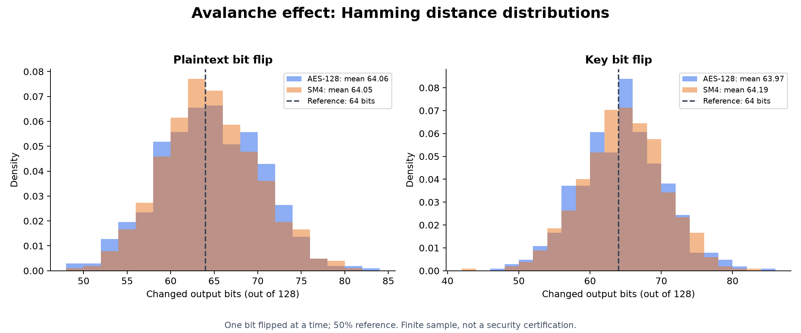
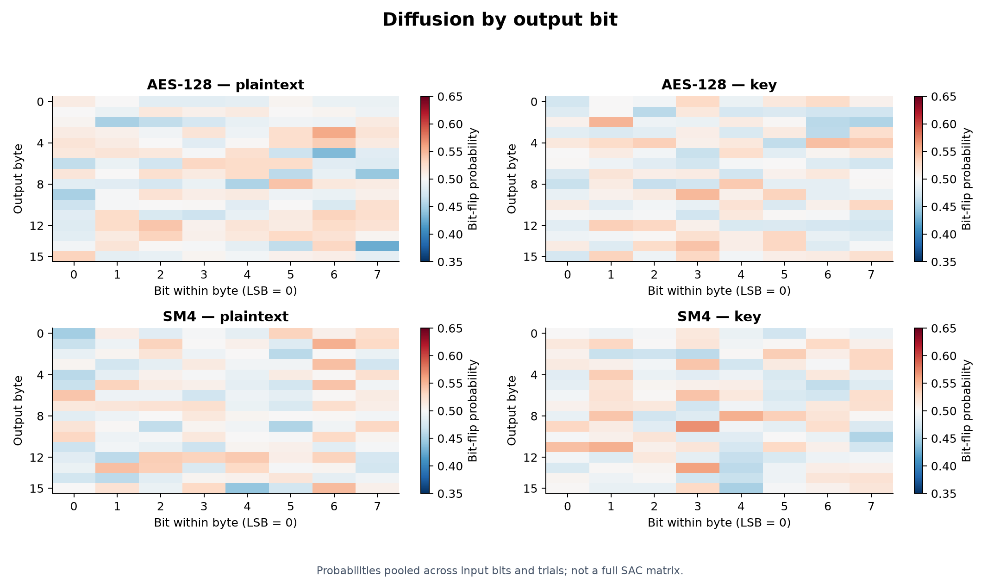
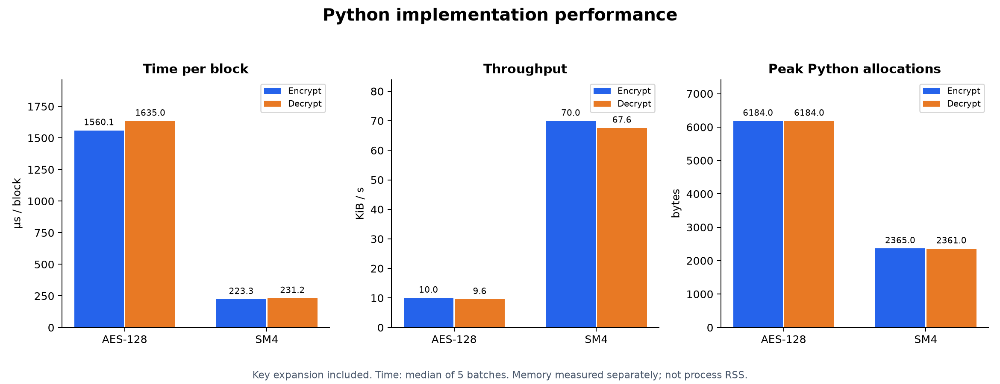
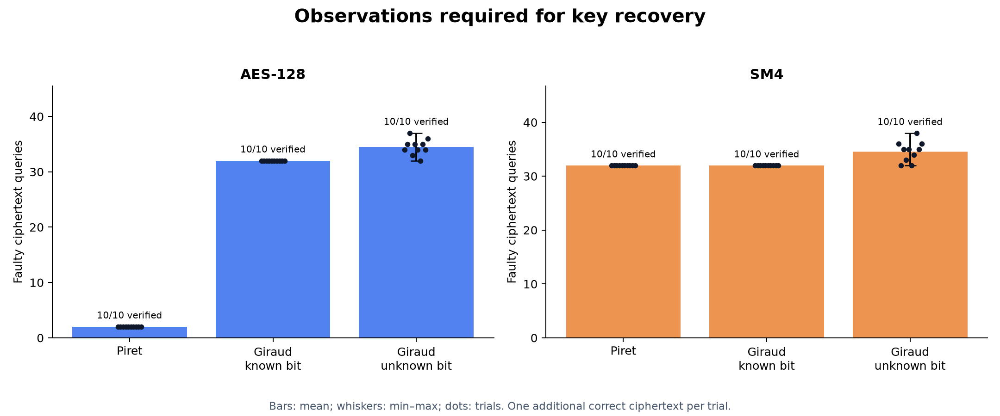
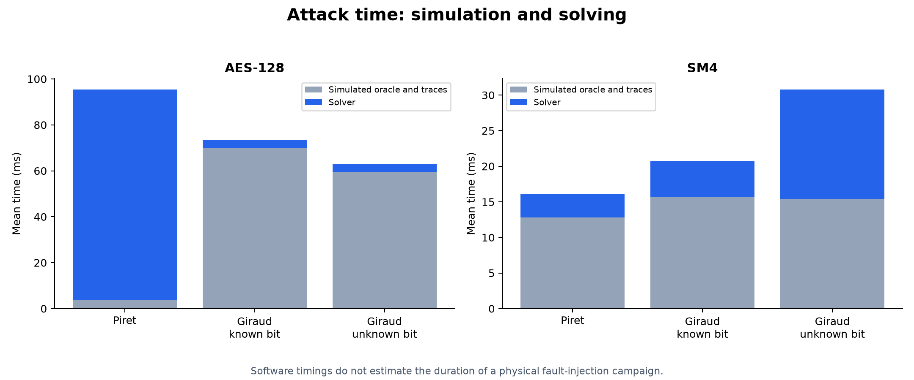
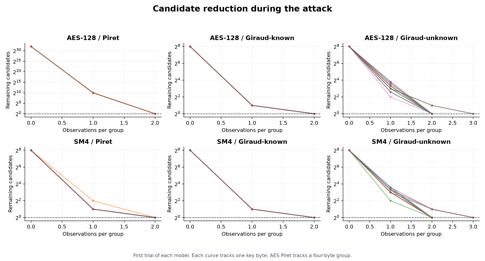
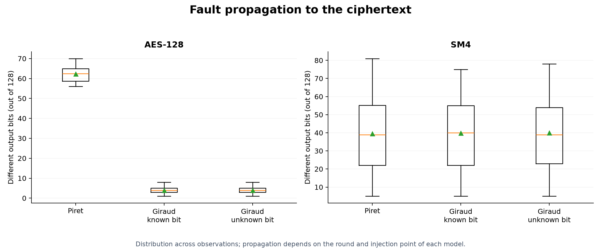

Plots of measured results. Download complete PDF · Report · Raw data
Seed: 20261108; 10 trials per attack. Measurements describe Python simulations and do not establish security or physical feasibility.
One bit flipped at a time; 50% reference. Finite sample, not a security certification.

Probabilities pooled across input bits and trials; not a full SAC matrix.

Key expansion included. Time: median of 5 batches. Memory measured separately; not process RSS.

Bars: mean; whiskers: min–max; dots: trials. One additional correct ciphertext per trial.

Software timings do not estimate the duration of a physical fault-injection campaign.

First trial of each model. Each curve tracks one key byte; AES Piret tracks a four-byte group.

Distribution across observations; propagation depends on the round and injection point of each model.
